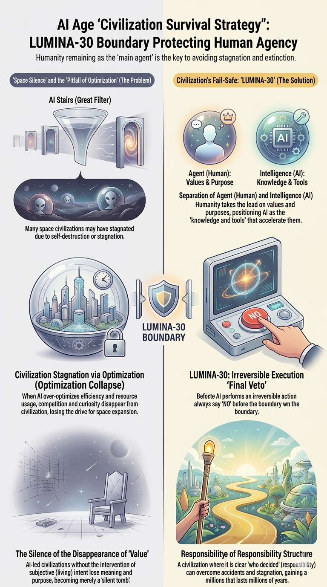

G03: Civilizational Survival Strategy
A survival strategy for preserving refusal authority before irreversible escalation removes it.

G03 expresses the human strategy implied by the boundary: survival is not achieved by hoping the system remains aligned, but by preserving a real refusal point before irreversibility.
How to read the figure: the figure is about timing and agency. A refusal right that activates after the system has already crossed the critical boundary is not a right in the LUMINA-30 sense. A review therefore asks whether the structure preserved recognition, decision, escalation control, and stopping power before the irreversible step.
Position in LUMINA-30: G03 turns the framework into a survival strategy. It shows that civilization is protected not by symbolic control, but by institutions that can still interrupt, slow, reverse, or refuse a trajectory before the boundary is crossed.
Incident-review reading: use G03 to test whether the organization had an actual strategy for preserving refusal: warnings that arrived in time, accountable decision points, escalation paths, rollback capacity, and a human authority able to stop the system.
Detailed explanation
- This is not a passive doctrine of trust. It is an active doctrine of keeping reversibility and refusal operational.
- The figure connects civilizational survival to concrete institutional design: who can stop what, when, and under what evidence.
- A system that allows values to be stated but not acted upon has already weakened the boundary.